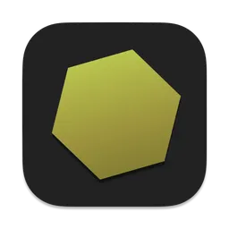
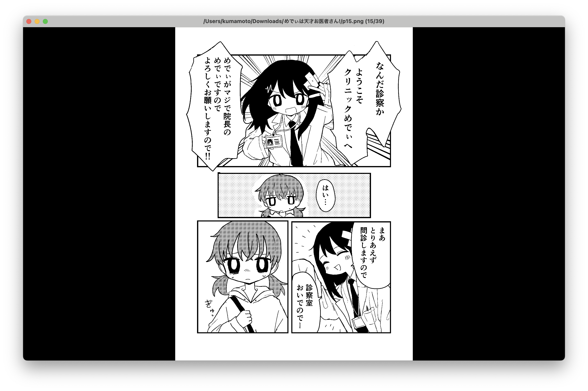
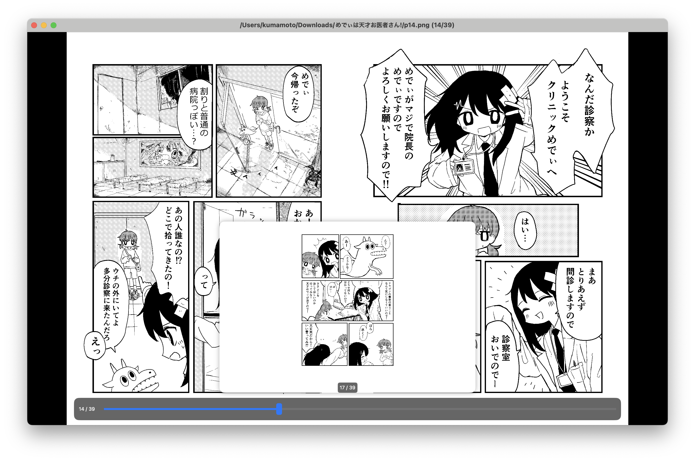
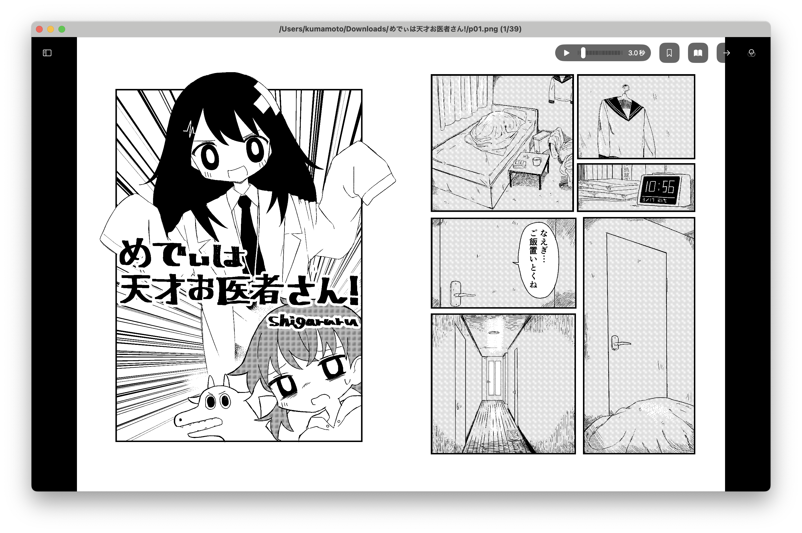

English
日本語
简体中文
繁體中文
한국어
Français
Deutsch
Español
Português (BR)
Português (PT)
Italiano
Nederlands
Svenska
Dansk
Norsk (Bokmål)
Norsk
Suomi
Polski
Čeština
Slovenčina
Magyar
Română
Hrvatski
Türkçe
Русский
Українська
Ελληνικά
Català
ไทย
Tiếng Việt
Indonesia
Melayu
हिन्दी
العربية
עברית
English (AU)
English (CA)
English (GB)
Español (MX)
Français (CA)
1 / 4 — Hero

Nectar
View
The Next Gen Manga & Comic Viewer for macOS
ZIP / RAR / 7z / PDF
Spread View
Blazing Fast
Free & Open Source



2 / 4 — Reading Modes
Read Your
Way
Single page, spread view, or realistic book mode. Left-to-right or right-to-left — it’s your choice.
Spread view with page binding
Clean single-page mode
LTR & RTL reading direction
Realistic 3D book appearance
SPREAD
SINGLE
3 / 4 — Archive Support
Open
Anything
Open archives directly without extraction. Blazing fast with background prefetching.
No extraction needed
Password-protected archives
Background prefetching
ZIP
RAR
7z
PDF
TAR
gz / bz2 / xz
LHA
lzh
Images
PNG JPG GIF WebP
CAB
sit / sitx
4 / 4 — Advanced Features
Packed with
Power
Everything you need for the perfect reading experience, built right in.
12 real-time image filters
Bookmark & quick navigation
Auto page turn (0.5–30s)
5x zoom with pinch & pan
Image rotation (90° CW/CCW)
Full keyboard shortcuts